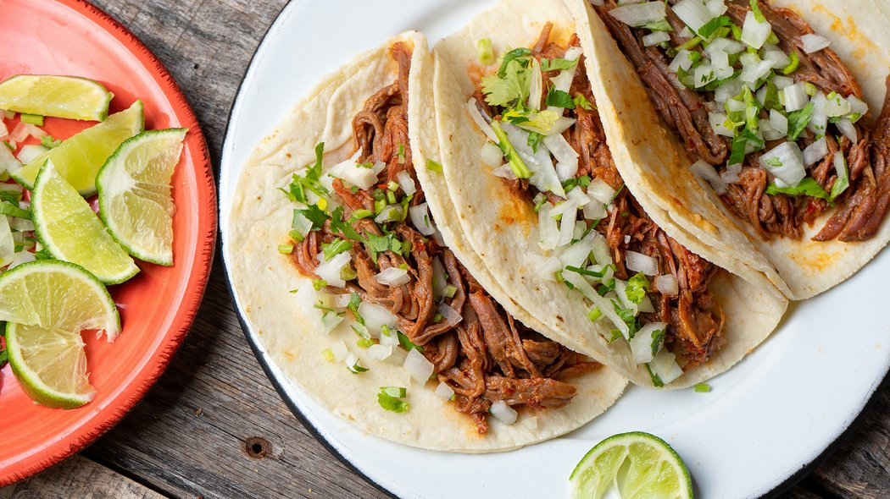

Tacos

Homemade Tacos are the perfect busy weeknight dinner.
These Easy Ground Beef Tacos are better than take-out and ready in minutes.
Ingredients
- 1 lb ground beef, 70-80% lean*
- 1 tbsp chili Powder
- 1/2 tsp salt
- 3/4 tsp cumin
- 1/2 tsp dried oregano
- 1/4 tsp garlic powder
- 1/4 tsp onion powder
- 1/2 cup tomato sauce
- white corn tortilla shells
- 1/2 cup of oil
Steps
- Heat a large skillet over medium heat. Add the ground beef. Break the beef up with a wooden spoon while cooking. Cook the ground beef fully, until browned and no longer pink.
- Drain any excess grease from the skillet. Then return to the stove and reduce the heat to low.
- Add the 1/2 cup tomato sauce and taco seasoning. Stir together until the meat is coated in the sauce.
- Allow to simmer for 5 minutes.
- Pour 1/2 cup oil in a medium size skillet, heat over medium high heat. Carefully dip a tortilla, if the oil sizzles and bubbles then it's hot enough. Gently lay the tortilla in the oil and fry each side for about 30 seconds, just enough to give some color and add some crispness.
- Remove the tortilla to a paper towel to absorb oil, and carefully fold the tortilla over to create a taco shape. I do this with my tongs, or two forks, whatever I'm using to lay the tortillas in the oil and remove them.
- Fill the tortillas with the ground beef taco meat and add desired toppings